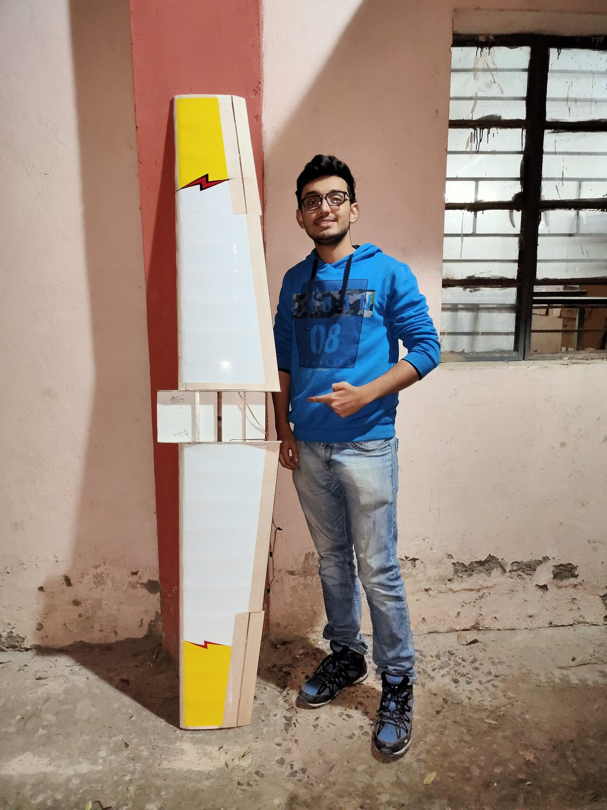
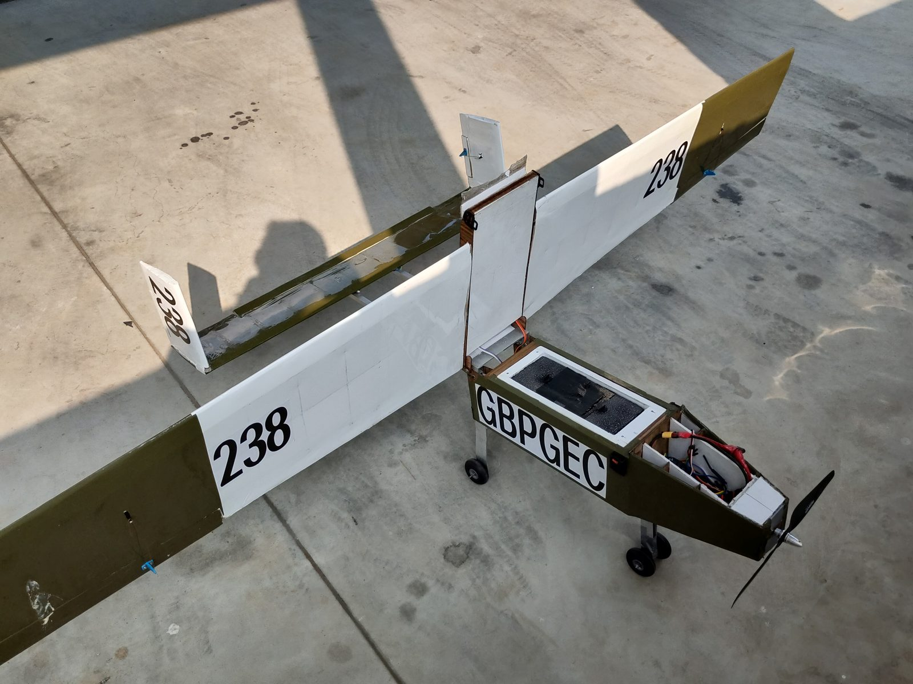

SAE Aero Design UAV
A student-built aircraft for the SAE Aero Design Challenge — a 2 m-wingspan, 5 kg-payload UAV, later extended in my B.Tech work with solar-power instrumentation for greatly increased endurance.

Project summary
The team designed, manufactured and flight-tested a 2 m-wingspan UAV capable of carrying a 5 kg payload, targeting structural efficiency, low drag and robust flight performance. In a B.Tech continuation I proposed integrating solar panels on the upper wing to extend endurance — calculations indicated a sunrise-to-sunset range on the order of ≈ 550 km under ideal conditions.
Flight test — short hop and cruise.
My role
I was responsible for the fuselage design and the CFD analysis of the wing and full aircraft. I built the complete CAD model in SolidWorks, ran aerodynamic studies (drag and polar curves), and validated designs in ANSYS — including composite checks with ANSYS ACP. For the B.Tech continuation I designed the solar-power system and carried out the energy and range calculations.

Airframe during assembly.
Key specifications
Primary materials: balsa ribs, aluminium spars and a carbon-fibre fuselage.

Built prototype, pre-flight.
Tools & analysis
- SolidWorks — full aircraft CAD and manufacturing drawings.
- ANSYS (CFX/Fluent & ACP) — aerodynamic CFD, flow visualisation and composite-layup simulation.
- MATLAB — drag-vs-velocity and thrust-vs-velocity curves, solar-energy and range predictions.

Field testing.